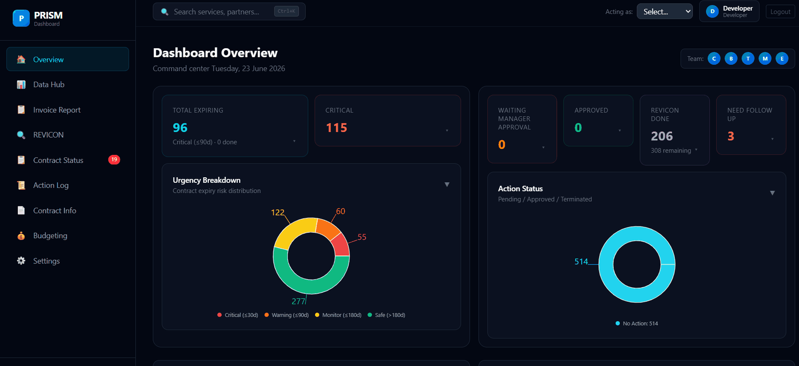

Case study · Internship
PRISM
A billing and service-continuity dashboard that replaced a manual weekly reporting process for a 12-person team.
- Role
- Sole developer
- Stack
- React 19, Express, SQLite
- Scale
- ~9,900 lines, 30 modules
- Users
- 12-person team
The problem
The operator’s service-readiness team produced a billing and service-continuity report every week. The inputs were always the same fixed-template spreadsheet exports; the process was entirely manual. Someone exported the files, read them, cross-referenced them, and rebuilt the same analysis by hand.
The complaint I was given, more or less verbatim, was that producing the weekly summary took a large share of someone’s week because it had to be done manually — and because the export template never changed, that same work was being redone from scratch every time.
That last detail is the important one. A fixed template is a schema. If the shape never changes, the parsing never needs to be done by a person.
What I built
PRISM ingests those exports and turns them into a live dashboard. The team uploads the same files they were already producing, and the analysis they used to assemble by hand comes out the other side.

The feature set
| Module | What it does |
|---|---|
| REVICON dashboard | The core revenue and cost review surface |
| Request summary | Invoice rollups by partner, currency, and billing period |
| Contract pipeline | Renewals and expiries, with what’s coming up |
| Manage service | Service records with layered overrides |
| Budget activity | Budget tracked against activity lines |
| Data hub | Upload and parse orchestration |
| Snapshot history | Versioned uploads the team can compare and vote on |
| Action log | An audit trail of what changed and who changed it |
The termination impact analyser
This one came directly out of a conversation rather than a spec. Terminating a service isn’t an isolated act — other services depend on it, and cancelling one can strand another. The requirement, once we’d talked it through, was that the tool had to be able to answer what breaks if I cancel this before anyone cancelled anything.
So termination became a two-step flow: request it, see the dependent services it would affect, then confirm. The rule the team wanted was that you cannot terminate without first clarifying the downstream effect.
Engineering decisions worth explaining
One sync layer instead of three
State needed to survive a refresh, stay consistent between people looking at the same data, and not lose work if a browser died mid-edit. I’d solved that three separate times — once each in the app shell, the REVICON dashboard, and the budget page — and the three copies had already started to drift.
I replaced them with a single hook. Its contract:
- Hydration is gated on authentication, so it runs after login rather than firing a 401 on mount and never retrying
- The server value wins over stale local storage
- Local storage is written immediately for crash safety; the server push is debounced 500ms per key, so a bulk edit coalesces into one request instead of forty
- A 60-second poll, paused while the tab is hidden, plus an immediate poll when the tab regains focus
- Pending writes are flushed on
pagehide - Storage quota failures dispatch an event so the UI can warn instead of silently losing data
None of that is visible to a user. All of it is the difference between a dashboard people trust and one they double-check against the spreadsheet.
Moving authentication off the client
The first version validated PINs in the browser and kept the user object in
sessionStorage. Both were wrong, and I fixed them together: PIN validation moved
server-side behind bcrypt, and the client now stores only an auth token — never a
credential.
Around 35 endpoints sit behind an auth middleware, with a second guard on manager-only routes, and three separate rate limiters covering general traffic, login attempts, and Telegram notifications.
A permission model shaped by the team, not the framework
The obvious design is admin and user. The actual team didn’t work that way. Twelve members, of whom four performed the REVICON reviews and submitted actions, and seven had no login at all but whose service records still needed to be visible to everyone.
So the model has three tiers, and they map to how the work is really divided rather than to a tidy abstraction. It was more code than the generic version and it meant the tool matched the team instead of asking the team to match the tool.
How it was built
Iteratively, with the people who would use it. Review rounds produced feedback I acted on directly — adding percentages to the request summary, folding a pending state into the active/terminated status, restructuring the proposal to lead with the benefit of the programme rather than its mechanics.
I also ran a self-review pass over the codebase and tagged findings by severity, then worked through them in place. Those tags are still in the source as comments next to the fixes, which means the reasoning is available to whoever reads it next.
What I’d do differently. The Excel parsers are the highest-risk part of the system — they run against files whose format I don’t control — and they were the last thing I wrote tests for rather than the first. I’d invert that next time. I’d also reach for a real database migration path earlier; SQLite was the right call for the trial, but I set it up in a way that made schema changes more manual than they needed to be.
Outcome
PRISM was trialled with the Service Readiness team and iterated through several rounds of their feedback. The weekly report that had been assembled by hand became a page you open.
On what’s shown here. PRISM was built for a client under a confidentiality agreement. The source, the database, and the client billing data aren’t published, and the screenshot is redacted. What’s described above is my own work and approach. Happy to talk through the architecture in more detail in an interview.